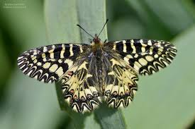

La mariposa del sur puede alcanzar una envergadura de 46 a 52 mm. Las hembras tienen alas ligeramente más largas y, por lo general, de color más claro que los machos. El color base de las alas es amarillo, con un complejo patrón de varias bandas y manchas negras.
En los bordes de las alas posteriores presentan una línea negra sinuosa con una serie de manchas azules y rojas de advertencia para disuadir a posibles depredadores ( aposematismo ). El cuerpo es de color marrón oscuro y tiene manchas rojas en los costados del abdomen.
Esta especie es bastante similar a la mariposa festón español ( Z. rumina ) , con la que solo puede confundirse . Las diferencias radican en la presencia de azul en las alas posteriores de Z. polyxena y en la menor cantidad de rojo en sus alas anteriores en comparación con Z. rumina . Las áreas de distribución de estas dos especies solo se superponen en el sureste de Francia.
Las orugas de Z. polyxena miden hasta 35 milímetros de largo. Inicialmente son negras, luego se vuelven amarillentas y presentan seis hileras de espinas carnosas de color naranja y negro por todo el cuerpo.
Estas raras mariposas se pueden encontrar en lugares cálidos, soleados y abiertos, como prados ricos en hierbas, viñedos, riberas de ríos, humedales, zonas cultivadas, matorrales, terrenos baldíos, acantilados rocosos y terrenos kársticos, a una altitud de entre 0 y 1700 metros sobre el nivel del mar, pero normalmente por debajo de los 900 metros.
Biología
Es una mariposa de principios de primavera. Los adultos vuelan de abril a junio en una sola generación. Los adultos están activos durante no más de tres semanas. Las hembras ponen sus huevos individualmente o en pequeños grupos en la base de las plantas hospedadoras. Cuando se encuentran en la naturaleza, prefieren vivir y poner sus huevos en áreas con vegetación densa, y existe una correlación positiva entre el número de hojas en la planta hospedadora y el número de huevos puestos por las hembras. Los huevos son esféricos y blanquecinos al principio, y de color azulado antes de la eclosión. Las orugas se alimentan de aristoloquias (principalmente ( Aristolochia clematitis , Aristolochia rotunda , Aristolochia pistolochia , Aristolochia pallida ). El alimento especial de las larvas proporciona las sustancias tóxicas que luego también llegan a los adultos, haciéndolos desagradables al paladar. Las orugas jóvenes se alimentan al principio de flores y brotes jóvenes, mientras que después de la segunda muda se alimentan de hojas. Las pupas permanecen unidas a un soporte por un cinturón de seda para hibernar y los nuevos adultos eclosionan la primavera siguiente.
Según las reglas del Código Internacional de Nomenclatura Zoológica , Artículo 1.3.4, los nombres utilizados solo por debajo del rango de subespecie no se consideran en la nomenclatura zoológica; los nombres infrasubespecíficos no tienen autoría formalmente reconocida y no compiten por prioridad u homonimia con los nombres utilizados para especies o subespecies. Por consiguiente, todos los nombres utilizados para las "formas" de Z. polyxena que se enumeran a continuación deben descartarse por carecer de validez nomenclatural, aunque muchos se presenten con autores y fechas.